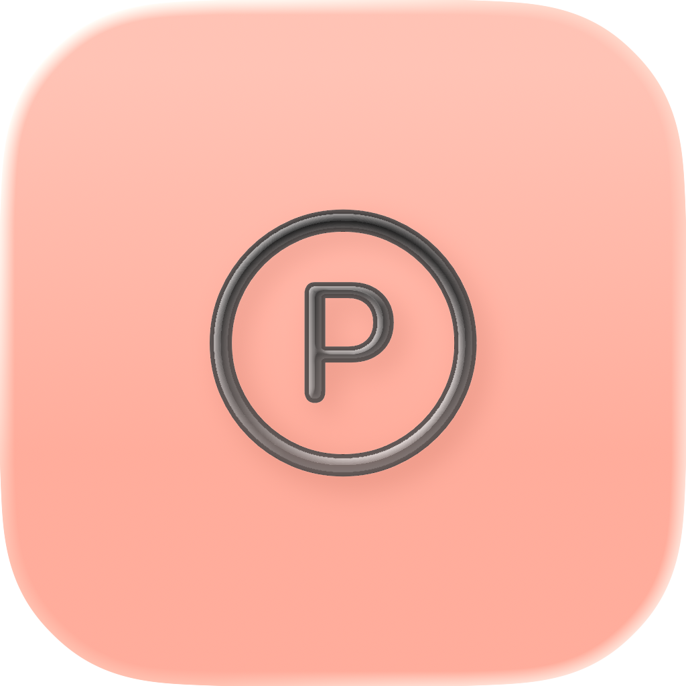
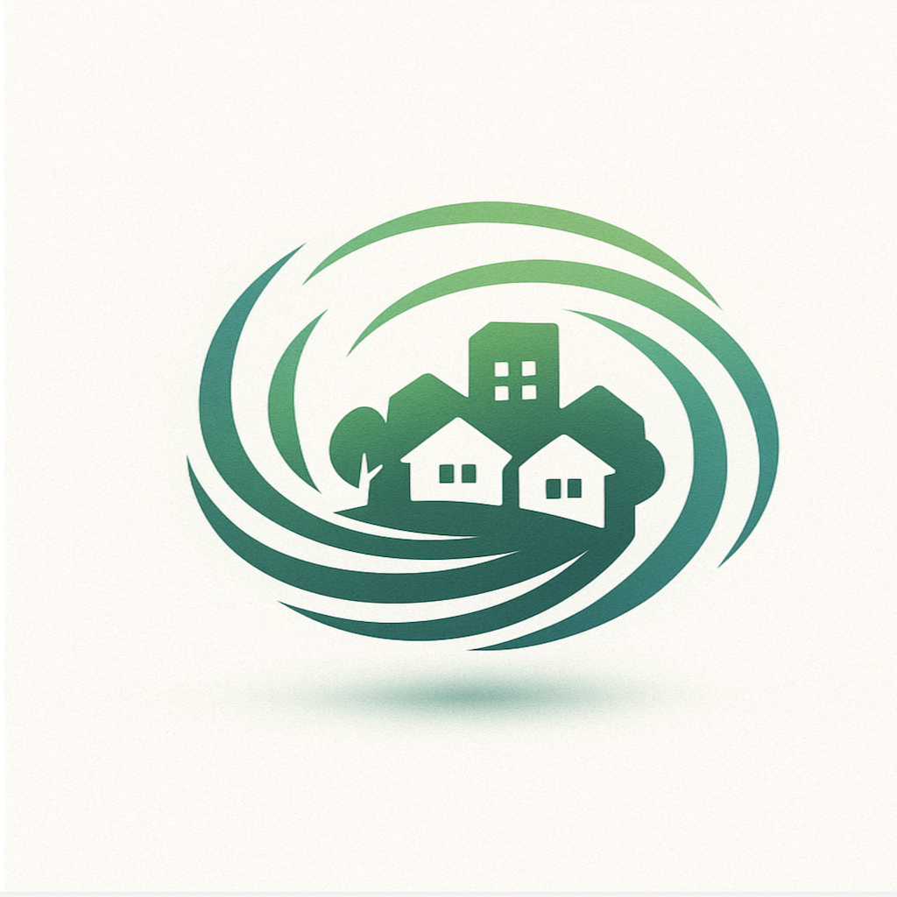
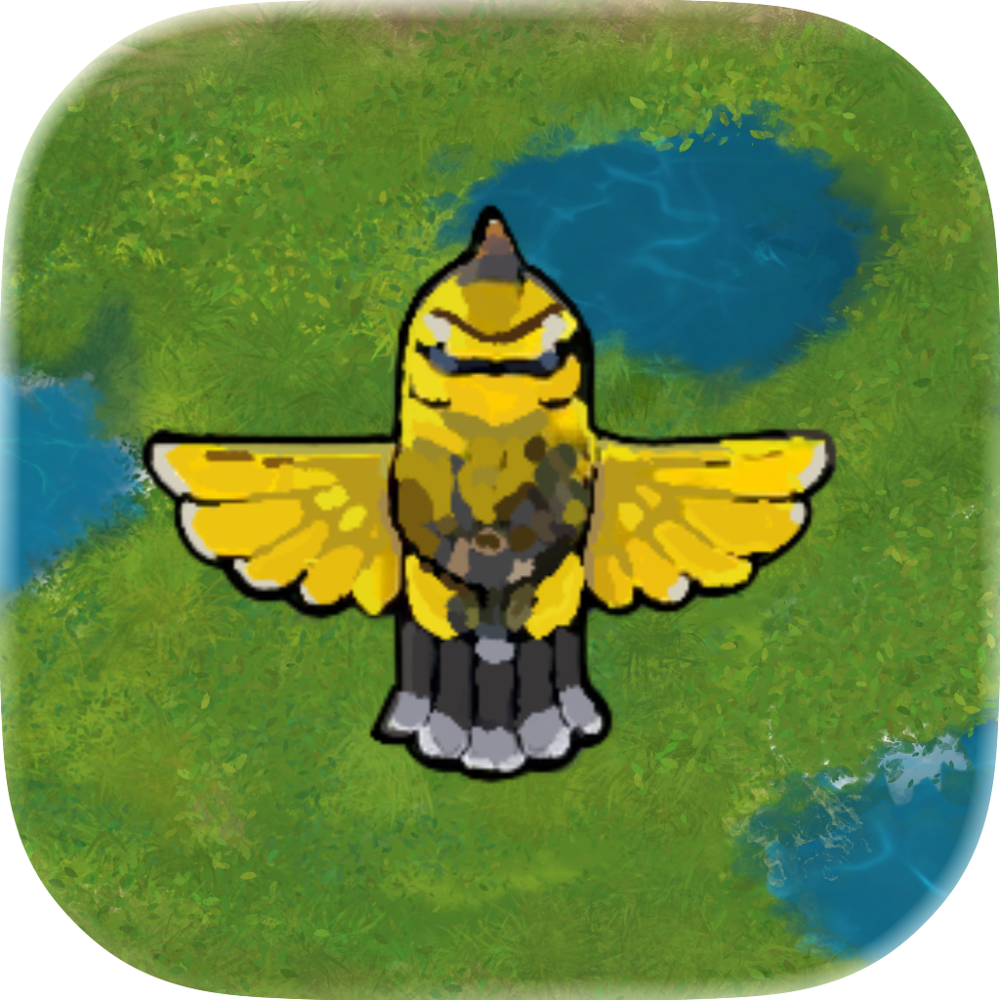
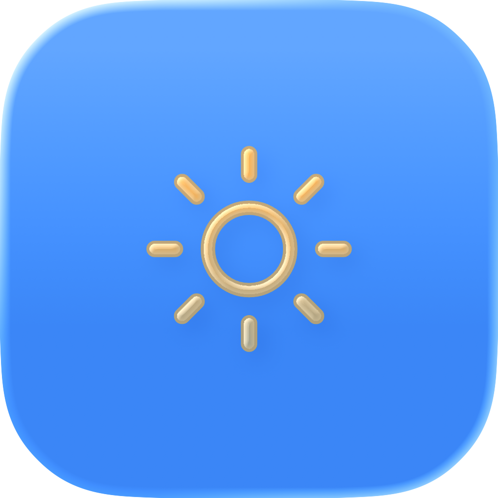
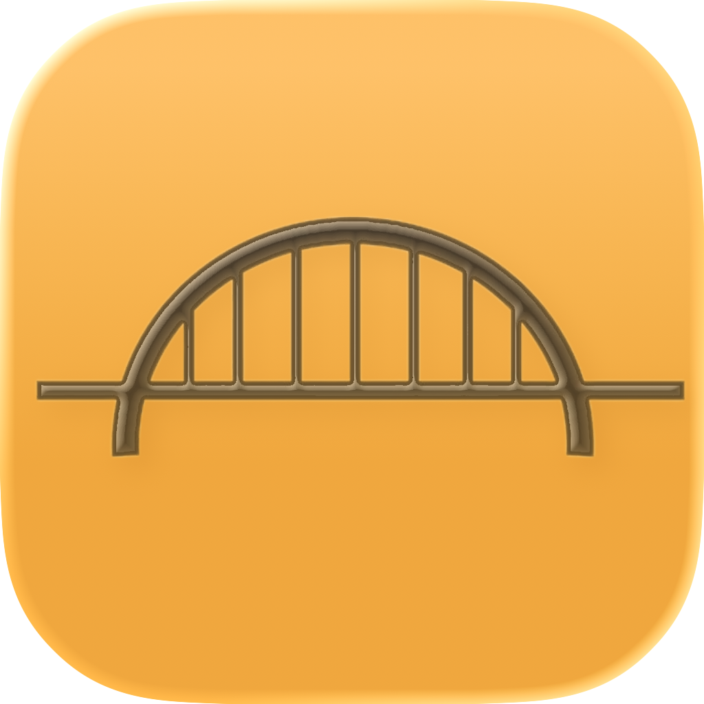
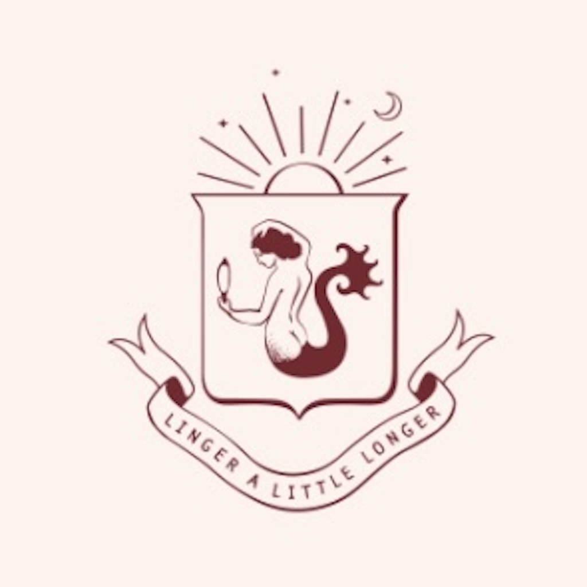

Case Studies
In-depth looks at my projects, design decisions, and technical approaches across iOS and web development.
SwiftUI & iOS Projects

Stamped! — A City Passport Live on App Store
A SwiftUI travel discovery app that turns Detroit architecture into a collectible city-passport experience with progress tracking and AI-assisted itinerary support.

SlotParking
A SwiftUI-based parking management app designed to streamline slot reservations, track parking history, and optimize user experience for drivers and lot managers. Built in Xcode with modern iOS best practices.

CommonSight
A role-based civic platform built during an internship with a small business owner to deliver an investor-ready demo for neighborhood reporting, campaigns, and direct communication.

TakeFlight — A Bird's Life
A SpriteKit survival game available on iPad and macOS, with full keyboard compatibility as players build and defend a nest across Belle Isle mini-games.

CoastCast
SwiftUI iOS app with a Python backend API for real-time Michigan water and weather data. Combines a modern interface with custom API calls to deliver up-to-date information for Michigan lakes and regions.

Relationship — Builder
A SwiftUI app for building and tracking professional relationships through interactive learning, gamified quizzes, and custom badges. Modular architecture, onboarding flows, and accessibility-first design.

Siren Cafe Coffee Ordering App
An iOS app for the Siren Cafe in Detroit, featuring menu browsing, item customization, and interactive customer feedback. Built with SwiftUI, MVVM, and UIKit confetti animations for a modern, engaging ordering experience.
Multi-Language & Web Projects
Detroit Sports Chatbot
A conversational AI chatbot that answers live questions about the Lions, Tigers, Red Wings, and Pistons. The model uses 15 ESPN API tools to fetch real-time scores, standings, injuries, and more — then streams the answer word by word.
LearnToCode
A Visual Studio Code-based learning project focused on building coding fluency through hands-on implementation, debugging, and iterative problem-solving.